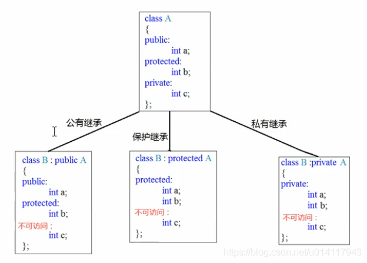
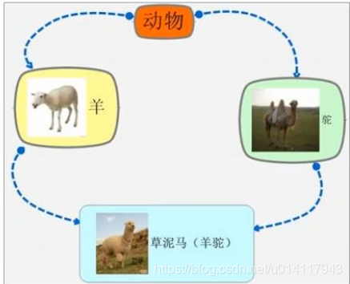

0. 基本语法
继承是面向对象的三大特性之一。
class 子类 ： 继承方式 父类
从父类继承来的表现其共性，而新增的成员表现其个性。
1. 继承方式
三种继承方式
- public
- protected
- private

- 父类中的private成员，无论哪种方式都不能访问。
2. 继承中的对象模型
问题：从父类继承来的成员，哪些属于子类对象中？
输出子类的sizeof可以看出，父类中的所有非静态成员都会被子类继承下去，无论哪种继承方式。
3. 父类和子类的构造和析构顺序
构造：先base后son
析构：恰恰相反，先son后base
4. 同名成员的处理
- 要访问子类成员：直接访问
- 要访问父类成员：加上作用域
son.base::a
- 父子类出现重名成员函数时，子类会屏蔽掉父类中所有的同名函数（如果父类中有重载，也全都屏蔽掉），如果想访问，就需要加上父类作用域。因为这是在重写父类中的非虚函数，该函数是在编译阶段完成地址绑定的。如果非要重写非虚函数，在设计上是矛盾的，父类把该函数设计成非虚函数的本意就是不希望子类去更改该函数。
5. 多继承
C++允许一个类继承多个类
语法：class 子类 ： 继承方式 父类1， 继承方式 父类2。。。
多继承可能会引发父类中有同名成员出现，需要加作用域区分。
C++实际开发中不建议使用多继承。
6. 菱形（钻石）继承
b类和c类继承于a类，d类又同时继承于b类和c类，就叫做菱形继承。

会出现的问题：
- 两个父类会有相同的数据，需要加以作用域进行区分。
- 菱形继承会导致数据有两份（来自b和来自c的都有一份），导致资源浪费。此时使用虚基类可以解决。
vbptr虚基类指针会指向vbtable虚基类表。
虚继承可能实际中不太会用到，因为多继承都很少用到，大概率是在面试中出现，知道底层实现的原理即可。